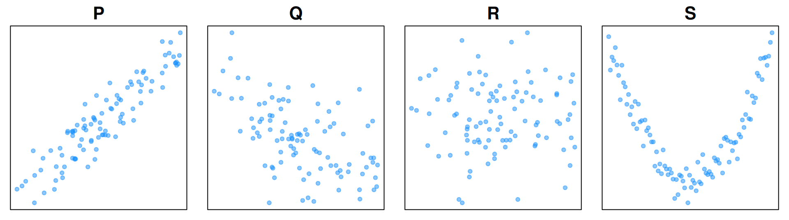

Week 2 Homework
Distributions, z-scores, correlation, and our first regression coefficient
These exercises go with the Week 2 lecture. Part A checks your understanding of the ideas. Parts B and C are problems to work through by hand. Part D is a data project in R using the Ames house prices from lecture. Part E is an optional R challenge.
A few ground rules:
- Show your work. A correct number with no reasoning is worth less than a wrong number with clear reasoning. For z-scores and correlations, write out each step (subtract the mean, divide by the SD, and so on).
- Write in plain language. If you can’t explain it to a friend who missed the lecture, you haven’t finished understanding it yet.
- Plot before you trust a number. Whenever you compute a mean or a correlation in R, make a picture of the data too.
- Problems marked ★ are harder. Give them a real try, but don’t get stuck on them.
Numbers you will need for the !Kung San adults (352 adults, age 18 and over), rounded the same way as in lecture:
| Mean | SD | |
|---|---|---|
| Height | 154.6 cm | 7.7 cm |
| Weight | 45.0 kg | 6.5 kg |
The correlation between height and weight is r = 0.75.
Part A: Concepts
A1. In lecture we said “random individuals → predictable populations.”
- Can you predict whether the next coin you flip will land heads? Can you predict roughly how many heads you’ll get in 1,000 flips? Explain the difference in one or two sentences.
- Give your own example of the same idea from life in Nepal. (For example: you can’t say whether one particular bus will be late, but …)
- For the !Kung data, name the population, and name two ways the cases vary.
A2. Talking about numbers differently. A friend asks you, “How much does a plate of buff momo cost in Kathmandu?” Write four answers, one for each kind of distribution from lecture:
- Uninformed (you have no idea at all)
- Weakly informed
- Strongly informed
- Domain-specific (a flat range you’re fairly sure about, with steep sides)
For each one, write one sentence in words (like the lecture’s “He’s probably about 40, but he could be quite a bit older”) and draw a rough sketch of the curve. Label the x-axis with prices in rupees.
A3. Is each of these a distribution of data or a distribution of belief? Give a one-line reason.
- The ages of everyone who voted in Pokhara in the last election.
- How plausible each value is for the share of Pokhara voters who will choose the current mayor next time.
- The sale prices of the 2,930 houses in Ames.
- How plausible each value of β is, after fitting weight on height.
- The monthly rainfall in Kathmandu for each month of 2025.
A4. Three words describe a distribution: center, spread, and shape.
- Explain each word in one sentence, without using a formula.
- Two villages both have an average household size of 5 people. In village X almost every household has 4, 5, or 6 people. In village Y many households have 1 or 2 people, and many have 9 or 10. Which word tells these villages apart?
- Look at the lecture’s chart of Nepal’s population by age. Is its shape one smooth hump, or does it have bumps? Name one thing that could cause a bump, or a dip, at a certain age.
A5. Mean vs. median. Five households in a village earn these amounts each month (in rupees): 20,000; 25,000; 30,000; 35,000; and 390,000.
- Compute the mean and the median.
- Which number better describes a “typical” household here? Why?
- In Ames, the mean house price is $180,796 and the median is $160,000. Which way is the long tail, and how do you know just from these two numbers?
A6. True or false? Give a one-sentence reason for each.
- A z-score of −2 means the case is 2 units (cm, kg, rupees …) below average.
- If you convert all heights from centimeters to inches, every z-score stays the same.
- After you turn a variable into z-scores, the shape of its histogram changes.
- A correlation of r = 0 means the two variables have nothing to do with each other.
- If height and weight have r = 0.75, then 75% of people who are tall are heavy.
- r = −0.8 is a stronger relationship than r = 0.5.
- In z-scores with one predictor, the best regression slope β is equal to r.
A7. Correlation is average agreement. In your own words (3–4 sentences), explain how each person “votes” in the correlation between height and weight. When is a vote positive? When is it negative? When is it close to zero? Why does a cloud of points in the “taller & heavier” and “shorter & lighter” corners give a positive r?
A8. Here are four scatterplots. Their correlations are about +0.9, −0.5, 0, and 0, in some order.
- Match each plot (P, Q, R, S) to its correlation.
- Two plots have r close to 0. Describe how they are different. In which one do the two variables clearly have a relationship?
- What lesson from lecture does this illustrate?
A9. Our first coefficient. In lecture we wrote \(z_{\text{weight}} = \beta \times z_{\text{height}}\).
- Why does this line need only one parameter? What happened to the intercept?
- What does it mean for one line to be “better” than another? Use the word errors.
- We found β = 0.75. Write one sentence that explains this number to someone who has never heard of a z-score.
- ★ The lecture showed two curves for β: one using 20 adults and one using all 352. Why is the curve for 20 adults wider? What does a wider curve tell us about our knowledge of β?
Part B: Distributions and z-scores
Use the !Kung numbers in the table at the top of this page.
B1. The 68–95–99.7 rule. Suppose !Kung adult height follows Normal(μ = 154.6, σ = 7.7).
- Between which two heights should about 68% of adults fall?
- Between which two heights should about 95% fall?
- In the real data, 65% of adults are within 1 SD of the mean and 96% are within 2 SD. Is the Normal distribution a good description? What else would you check?
- About how tall is an adult who is exactly 2 SD above average? Would you call that person rare, unusual, or ordinary? (Use the table from the “Reading z-scores” slide.)
B2. A !Kung woman is 140 cm tall and weighs 38 kg.
- Compute her z-score for height.
- Compute her z-score for weight.
- Is she more unusually short or more unusually light? Explain in one sentence.
B3. Going backwards. A z-score turns a value into “SDs from average.” You can also go the other way: value = mean + z × SD.
- What weight has a z-score of +1.5?
- What height has a z-score of −1?
- ★ A classmate says, “A z-score of 1 in height and a z-score of 1 in weight mean the same number of centimeters and kilograms.” What is wrong with this?
B4. A common ruler. Sita takes two exams. In Maths she scores 72; the class mean is 60 and the SD is 12. In English she scores 80; the class mean is 72 and the SD is 4.
- On which exam did she score more points above the class average?
- Compute her z-score on each exam.
- On which exam did she do better compared to her classmates? Why do (a) and (c) give different answers?
B5. ★ A shop in Biratnagar records the daily sales of rice in kilograms. The mean is 200 kg and the SD is 40 kg. The owner decides to report sales in quintals instead (1 quintal = 100 kg).
- What are the new mean and SD?
- A day with 260 kg of sales had what z-score before the change? What z-score after?
- In one sentence, explain why z-scores let us compare things “measured on completely different scales.”
Part C: Correlation and regression by hand
C1. Computing r by hand. Five students at a tuition centre in Lalitpur report how many hours they studied in a week and their mark on a test.
| Student | Hours studied | Test mark |
|---|---|---|
| A | 2 | 50 |
| B | 2 | 50 |
| C | 5 | 70 |
| D | 8 | 60 |
| E | 8 | 70 |
For hours, the mean is 5 and the SD is 3. For marks, the mean is 60 and the SD is 10.
- Compute the z-score of each student for hours and for marks.
- For each student, multiply the two z-scores. This is the student’s “vote.” Which students vote positive? Which vote zero?
- Use the lecture formula to compute r: \(r = \frac{1}{n-1} \sum z_{\text{hours}} \times z_{\text{mark}}\).
- Student C studied an average amount but got a high mark. How did C’s vote affect r?
C2. Using your answer from C1:
- In z-scores, what is the best slope β? Write the line as \(z_{\text{mark}} = \beta \times z_{\text{hours}}\).
- Convert β to real units: marks per hour of study. (Use β × SDmark / SDhours.)
- Write one plain sentence that describes your answer to (b).
- With only five students, should we be confident about this number? What would make us more confident?
C3. The !Kung regression. Use β = r = 0.75 and the table at the top of the page.
- Convert β to kilograms per centimeter.
- Two !Kung adults differ in height by 10 cm. About how much heavier would you expect the taller one to be?
- A !Kung man is 165 cm tall. What is his z-score for height? Using \(z_{\text{weight}} = 0.75 \times z_{\text{height}}\), what is his predicted z-score for weight? Turn that into kilograms.
- In lecture, this same 165 cm man actually weighs 58 kg. Is he above or below the line? By about how much?
C4. ★ Turning it around. In z-scores, the best line for weight on height is \(z_{\text{weight}} = 0.75 \times z_{\text{height}}\).
- A classmate says, “Then the line for height on weight must be \(z_{\text{height}} = \frac{1}{0.75} \times z_{\text{weight}} = 1.33 \times z_{\text{weight}}\).” Use the lecture’s rule (with standardized data and one predictor, β = r) to find the correct slope.
- Someone is 2 SD heavier than average. Is their predicted height more or less than 2 SD above average? Why does this make sense when r is less than 1?
Part D: What makes a house expensive? (in R)
For this part you need R and the file datasets/ames.csv. Each row is one house sold in Ames, Iowa (USA) between 2006 and 2010. Prices are in US dollars and areas are in m². Start with:
library(tidyverse)
houses <- read_csv("datasets/ames.csv")Hand in your code and your plots along with your answers.
D1. Look at the distribution.
- How many houses are there? Make a histogram of
price. - Compute the mean, median, and SD of
price. - What share of houses sold for more than the mean price? Why is it not 50%?
- Describe the shape of the distribution in one or two sentences, using the words center, spread, and shape.
D2. How unusual is this house?
- Add two new columns,
z_priceandz_area, using the code from the “Reading z-scores” slide. Check that each has a mean of 0 and an SD of 1. - Find the cheapest house. What is its z-score for price? Now find the most expensive house. What is its z-score?
- The most expensive house is much further from average than the cheapest one. Why? (Hint: look at your histogram.)
- What share of houses have a price within 1 SD of the mean? Within 2 SD? Compare with the 68–95 rule. What share are more than 2 SD above the mean, and what share more than 2 SD below? What does that tell you about using the 68–95 rule here?
D3. Price and living area.
- Make a scatterplot of
price(y-axis) againstarea_m2(x-axis). - Compute the correlation. Does it match the lecture?
- Five houses have more than 400 m² of living space. List them with their price and neighborhood. Which ones are “off the pattern”?
- Remove the three large houses in the Edwards neighborhood and compute r again. How much does it change? Why is the change small, even though these houses look so strange on the plot?
D4. Guess first, then check.
- Before you compute anything, write down your ranking of these from strongest to weakest correlation with price: bedrooms, bathrooms, living area, lot area, garage size, year built.
- Now compute the six correlations in R. How close was your guess? Which one surprised you most?
- Why can we compare a correlation for “number of cars” with one for “year built,” even though they are measured in completely different units?
D5. One coefficient.
- Fit the regression in z-scores with
lm(z_price ~ z_area, data = houses). Check that the slope equals the correlation from D3. (The intercept should be essentially zero. R may print a tiny number like1e-16, which is just rounding.) - Convert β to dollars per m², using β × SDprice / SDarea. Then check your answer with
lm(price ~ area_m2, data = houses). - Write one sentence that explains the slope to someone buying a house.
- A house is 1 SD larger than average. About how many dollars more would you expect it to sell for?
D6. ★ The bedroom puzzle.
- Compute the correlation between
bedroomsandpricefor all houses. - Now keep only houses with a living area between 120 and 150 m² (
filter(area_m2 >= 120, area_m2 < 150)). Compute the same correlation. What happened? - Compute the correlation between
bedroomsandarea_m2for all houses. - In 3–4 plain sentences, suggest how both (a) and (b) can be true. You don’t need any new tools. Think about what else usually comes with more bedrooms. (We’ll come back to this next week.)
Part E: R challenge (optional)
E1. Check the formula. For the !Kung adults (datasets/kungsan.csv, keep age >= 18), compute r by hand in R: make the two z-score columns, multiply them, add them up, and divide by n - 1. Check that you get the same answer as cor(height, weight). Then fit lm(z_weight ~ z_height) and check that the slope is the same number again.
E2. Nepal among the world’s countries. Use the World Bank data from the student projects. This code builds one row per country with life expectancy, fertility (births per woman), and GDP per person:
library(tidyverse)
countries <- read_csv("datasets/wb_country.csv") |>
filter(!is.na(Region)) # drop groups like "South Asia" or "World"
wb <- read_csv("datasets/wb2022.csv", na = c("", "NA", "..")) |>
filter(`Series Code` %in% c("SP.DYN.LE00.IN", "SP.DYN.TFRT.IN", "NY.GDP.PCAP.CD")) |>
select(country = `Country Name`, code = `Country Code`,
series = `Series Code`, value = `2022 [YR2022]`) |>
pivot_wider(names_from = series, values_from = value) |>
rename(life_exp = SP.DYN.LE00.IN, fertility = SP.DYN.TFRT.IN,
gdp_pc = NY.GDP.PCAP.CD) |>
semi_join(countries, by = c("code" = "Code")) |>
drop_na(life_exp, fertility, gdp_pc)- Make a histogram of
life_exp. One country has a value that cannot be right. Which country is it, and what is the value? (It is almost certainly a data error.) - Compute Nepal’s z-score for life expectancy and for fertility, first with all countries, then without the bad value. Which z-score changes more, and why?
- Compare the mean and median of
gdp_pc. What does that tell you about its shape? - Make a scatterplot of
life_expagainstfertilityand compute r (without the bad value). Describe the relationship in one sentence. - ★ Convert β to “years of life expectancy per extra birth per woman.” Then explain in 2–3 sentences why this number does not mean that having fewer children would make people in Nepal live longer.
E3. ★ How much does r move with 20 people? Draw 20 !Kung adults at random (slice_sample(n = 20)) and compute r. Repeat this 1,000 times and make a histogram of the 1,000 values. How wide is the spread? Do the same with samples of 100. Connect what you see to the two curves for β in lecture.
Part F: Reflection
F1. Find a news story or social media post that says one thing is “linked to,” “associated with,” or “goes with” another, for example in health, education, or money. In a short paragraph:
- What are the two variables?
- Do you think the relationship is a straight line, a curve, or something else? Could one extreme case or two hidden groups be driving it?
- Does the story say how strong the relationship is? Does it suggest that one thing causes the other?
F2. Think of one number people often say about Nepal as if it were a single fact (the average income, the average age at marriage, the price of land in your area…). In 3–4 sentences, describe it as a distribution instead. What is its center? How spread out is it? What shape do you think it has?